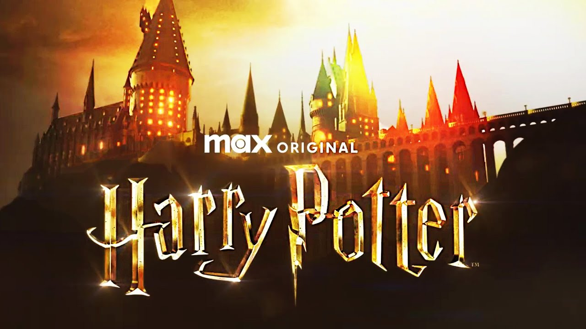

La magia regresa a la televisión
Desde que se anunció el regreso de Harry Potter a la pantalla en formato de serie, los fanáticos han estado ansiosos por conocer más detalles.
En este artículo, exploraremos todo lo que sabemos hasta ahora sobre esta esperada producción.
¿Qué podemos esperar?
La serie promete ser una adaptación más fiel de los libros, con cada temporada basada en uno de los siete libros originales. Esto significa que los fans podrán ver más detalles y escenas que fueron omitidas en las películas.
Además, se espera que se exploren más en profundidad personajes secundarios como Peeves, Winky y Ludo Bagman, quienes apenas tuvieron presencia en las adaptaciones cinematográficas.
Fecha de estreno
Aunque aún no hay una fecha confirmada, los rumores sugieren que podríamos ver el primer episodio en 2026. Warner Bros. ha confirmado que se encuentra en fase de preproducción y que están buscando un elenco completamente nuevo.
Nuevo elenco y dirección
Uno de los aspectos más discutidos de la serie es el reparto. Se ha confirmado que se buscarán actores completamente nuevos para interpretar a Harry, Ron y Hermione, lo que ha generado opiniones divididas en la comunidad.
En cuanto a la dirección, se ha mencionado que la serie podría contar con diferentes directores para cada temporada, lo que permitirá ofrecer una visión única de cada libro.
Actores confirmados
Lithgow será Dumbledore
Albus Dumbledore es uno de los personajes más importantes de esta historia, ya que no solo es el director de Hogwarts, también es una figura paternal para Harry y es quien lo ayuda a descubrir la manera de destruir a Voldemort. En la película, este personaje fue interpretado por dos actores, primero por Richard Harris y después por Michael Gambon, además de que fue interpretado por Jude Law en las películas de Fantastic Beasts.
Quién será Snape
De acuerdo con varios reportes, el actor Pappa Essiedu, quien apareció en la exitosa serie I May Destroy You, es el candidato principal para interpretar a Severus Snape y está en negociaciones para unirse a la serie. Snape es uno de los personajes más interesantes, ya que parece ser un villano al inicio de la saga, pero poco a poco vamos descubriendo quién es realmente y la importante labor que debe desarrollar. En la película, Snape fue interpretado por Alan Rickman.
¿Dónde se emitirá?
Se espera que la serie sea una producción exclusiva de HBO Max, lo que significa que los suscriptores de la plataforma podrán disfrutarla sin necesidad de pagar un costo adicional.
Expectativas de los fans
Los fanáticos esperan que la serie capture la esencia de los libros y sea lo más fiel posible a la obra de J.K. Rowling. Entre las peticiones más repetidas están una representación más profunda de la historia de los Merodeadores, la relación de Dumbledore y Grindelwald, y una mejor exploración de la infancia de Voldemort.
Aunque todavía hay muchas incógnitas sobre la nueva serie de Harry Potter, el entusiasmo de los fans sigue creciendo. Solo queda esperar nuevas noticias y confiar en que esta adaptación logre devolvernos la magia que vivimos con los libros y películas originales.